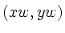
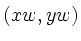
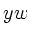
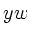

Labels can be concatenated if you wish to incorporate font changes,
subscripts or superscripts, or other special effects in labels. The
plot title in figure 7.2, page ![[*]](crossref.png) ,
illustrates how this can be done. plt keeps track of the RC point of each label, and uses these coordinates in place of
omitted
,
illustrates how this can be done. plt keeps track of the RC point of each label, and uses these coordinates in place of
omitted  or  coordinates in label options. If the
coordinates are omitted from the first label in any given plot, the
RC point of the plot title is used to determine the label
coordinates.
or  coordinates in label options. If the
coordinates are omitted from the first label in any given plot, the
RC point of the plot title is used to determine the label
coordinates.
This facility would be of little use if it were not possible to change the style used by plt for rendering the text of labels. This can be done using fontgroup substitution, as described in detail in chapter 11, beginning on page 11. In a nutshell, what you do is to describe the style you want in an extra argument that is enclosed in parentheses and that immediately follows the option name, as in:
-L (Ft-b-i,P20,Cmaroon) .5 .5 CC Marooned!(This sets the label ``Marooned!'' in 20-point Times Bold Italic of an appropriate color.)
If you wish simply to concatenate labels, perhaps changing the font or text color, use LC as the text box coordinate for the second (and subsequent) labels, as in:
-L (Cblue,Fh) .4 .7 CC Hello, -L (Cgreen,Fh-o) - - LC " World!"These commands produce a blue Helvetica ``Hello,'' centered on window coordinates (.4,.7) followed by a green Helvetica-Oblique ``World!''. Note that the entire string is not centered on (.4,.7); if you want to center a multi-part label you will need to do some experimentation. Also note the use of quotation marks to force the inclusion of the initial space before ``World!''.
In the following example, Greek and Roman letters are mixed to produce the equation :
-L .3 .5 CC y = A sin( -L (Fs) - - LC w -L - - LC "t + " -L (Fs) - - LC f -L - - LC )
To create a subscript or subscript, use LN or LB
respectively as the text box coordinate for the label containing the
subscript or superscript, and use LB or LN to return to
the original baseline afterwards. It is often effective to reduce the
point size of superscripts and subscripts, as in this example, which produces
 :
:
L .6 .3 LC y = x L (Fs,P*.8) - - LB a L - - LN " + x" L (P*.8) - - LN 0 L (Fs) - - LB bThe same effects are possible in a vertical label, as in this example:
vl .6 .5 LC 1 - y = x vl (Fs,P*.8) - - LB 1 - a vl - - LN 1 - + x vl (P*.8) - - LN 1 - 0 vl (Fs) - - LB 1 - b
See figure 8.2 for examples of this technique. This figure was created using the command
plt cos2.data 0 1 -f labels.formatwhere cos2.data was created using this program fragment:
for (i = -180; i <= 180; i += 5) {
c = cos(M_PI*i/180.0);
printf("%d %g\n", i, c*c);
}
and labels.format contains:
xa -180 180 15 - 3 ya 0 1 # Set the first part of the plot title using the -t option. t Plot of y = cos # Concatenate the remaining pieces using -L options. L (P*.8) - - LB 2 L - - LN ( L (Fs) - - LC q # "q" in Symbol font is theta. L - - LC ) # Avoid drawing a normal x-axis label. x "" # Instead of a normal x-axis label, draw this label using # the -L option with ym = -.16, to put it in the same # position as a normal x-axis label. L (Fs) .425 -.16 LC q L - - LC " (degrees)" # Similarly, draw this label using -vl with xm = -.115 to put it # in the same position as a normal y-axis label. (We don't need # to suppress the normal y-axis label, because plt produces one # only if requested explicitly.) vl -.115 .44 LC 1 - cos vl (P*.8) - - LB 1 - 2 vl - - LN 1 - ( vl (Fs) - - LC 1 - q vl - - LC 1 - )
Another way to create subscripts and superscripts is to specify an
appropriate  or  while omitting the x coordinate (for
horizontal labels). Some experimentation may be needed to achieve the
desired results.
or  while omitting the x coordinate (for
horizontal labels). Some experimentation may be needed to achieve the
desired results.
These methods cannot be used directly to concatenate text in axis labels. If you need to do this, suppress plt's standard axis label, either by supplying an empty string as the argument for -x or -y, or by using the appropriate -s option (see chapter 10); then create your own axis label using the options described above.